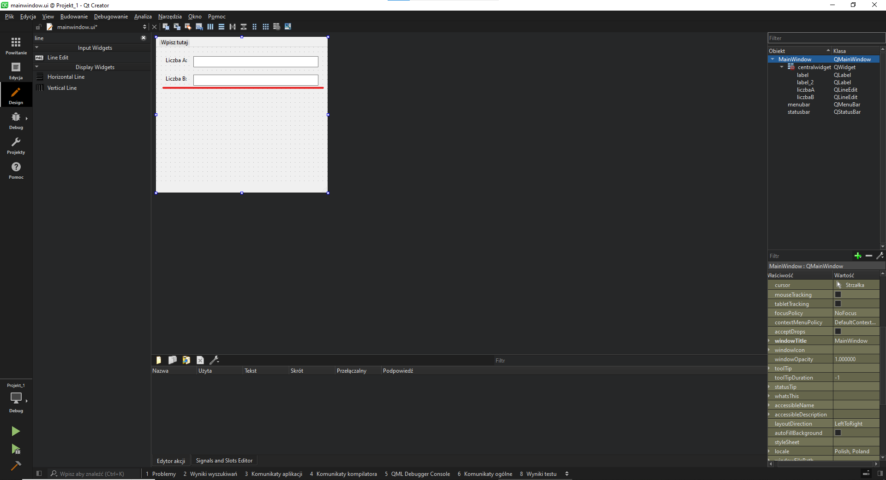

Tworzenie aplikacji NWD
Pierw trzeba utworzyć projekt, naciśnij "Create Project...", zaznaczamy "Qt Widgets Application" i dajemy "wybierz..."
Wybieramy folder i nazywamy projekt, Podczas tworzeniu projektu tworzy się folder o nazwie projektu, a w tym folderze będą przyrządy do tworzenia aplikacji Qt Widgets
Podczas tworzenia aplikacji Qt Widgets trzeba pamiętać by zaznaczyć "System budowania" na qmake.
W zestawach narzędzi klikamy "Zaznacz wszystkie zestawy narzędzi".
Do końca przeklikujemy i klikamy zakończ.
Rozpoczęcie z tworzeniem aplikacji NWD
Tworzenie interfejsu aplikacji
Pierw zastanówmy się jak ma wyglądać nasz interfejs graficzny, żeby stworzyć aplikację NWD potrzebujemy 2 wejść, jeden z napisem "Liczba A:" i drugi "Liczba B:".
Potrzebujemy też jakiegoś elementu(widgetu) który będzie przechowywać wynik naszej funkcji. Musimy mieć też przycisk który po naciśnięciu zczyta wartości z wejść
i obliczy na nich NWD, po czym wyświetli wynik w widget'cie.
Rozwijamy folder formularze i otwieramy plik "mainwindow.ui".
Powinienyś widzieć taki widok:
Wyszukaj label(z ang. etykieta) i przeciągnij widgeta na ekran, zwiększamy wielkość labela, zjeżdżamy na dół i znajdujemy właściwość Text i przypisujemy do niej nazwę "Liczba A:".
Trzeba też pobierać z kąś informacje, do tego potrzebujemy Line Edit, wyszukaj Line Edit i przeciągnij na okno, trzeba zmienić właściwość objectName przyda nam się to do
wykorzystywania tego widgetu podczas pobierania danych do zmiennych, można to uznać jako nazwę(id) elementu.
Można teraz skopiować już istniejące obiekty w oknie albo je dodać ręcznie.
Jako powtórzenie skopiuj i zmień właściwości elementów.

Przedostatnią rzeczą jaką musimy zrobić to dać przycisk którym wysyłamy i obliczamy NWD.
Wyszukaj Push Button i przeciągnij Push Button na okno i zmieniamy tekst na taki aby pasował do tego co ten przycisk robi, w tym przypadku zmienimy właściwość text na "Oblicz NWD"
Ostatnim etapem to dodać label w którym pokażemy wynik, ustaw label i zmień właściwość objectName na "wynik", a właściwość text na "Wynik =",
pamiętaj że trzeba wydłużyć objekt wynik tak aby nie ucięło wyniku podczas wyświetlania dużej liczby
Działanie aplikacji
Zrobiliśmy już wygląd aplikacji, to teraz kolej na to jak ta aplikacja ma działać.
Przejdź na zakładkę edycja, rozwiń folder Źródła i otwórz plik mainwindow.cpp
Stwórzmy u góry programu funkcję NWD, ja zastosowałem wersję Euklidesa
Wracamy do mainwindow.ui (interfejsu) i klikamy prawym przyciskiem na przycisk w oknie, klikamy przejdź do slotu i wybieramy opcję clicked()
Powinno to nas przenieść do mainwindow.cpp i stworzyć funkcję, ta funkcja wywołuje się gdy naciśniemy na dokładnie ten przycisk, jak zrobimy to samo na inny
przycisk to stworzy 2 funkcję która działa dla drugiego przycisku.
Pobieramy dane(tzn. właściwość text) w sposób ui->*nazwa elementu*->text(), wykorzystajmy to w kodzie
Pobieramy liczbę, więc używamy metody toInt(), która konwertuje tekst na liczbę.
Mamy już funkcję więc trzeba ją tylko wykorzystać. Aby wpisać coś do elementu używamy ui->*nazwa elementu*->setText(*argument typu QString*)
Funkcja NWD zwraca typ int, dlatego używamy QString::number(*liczba*), bo konwertuje typ number na typ QString
Aplikacja gotowa!
Właśnie stworzyłeś prostą aplikację obliczającą NWD 2 liczb w Qt Widgets
Żeby przetestować aplikację trzeba nacisnąć ten przycisk w lewym-dolnym rogu